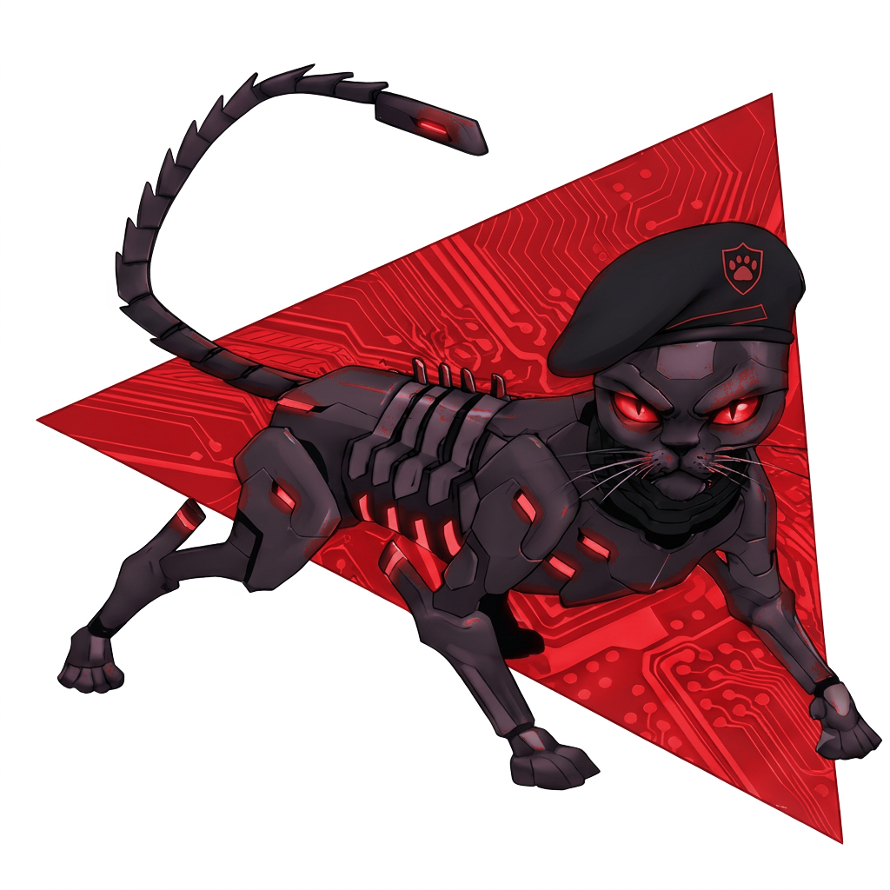
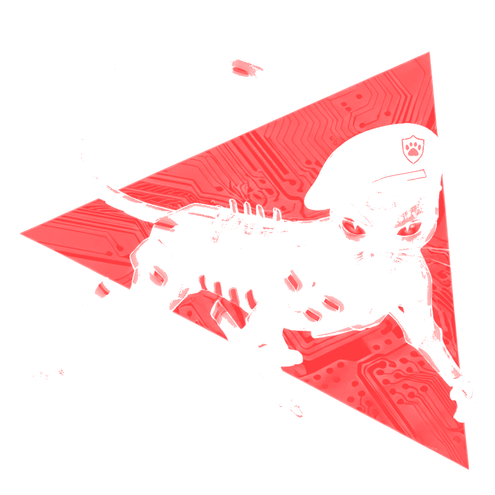

From Attack
to Defense.
Alertas mostram onde há falhas. Não mostram quais viram invasão. A aperIA emula um adversário real, correlaciona as evidências com I.A. e prova o caminho completo para você fechá-lo antes que alguém o percorra.


O caminho desce
e se prova,
camada por camada.
Da entrada ao objetivo final :
Três tiers de profundidade crescente, cada hop validado antes de escalar para o próximo. Cada etapa indica o tipo de varredura, não a ferramenta.
TRIAGEM
ANÁLISE
EMULAÇÃO
Do sinal à prova, em três camadas.
Coletar
Scanners varrem código e infra e ligam cada finding ao seu commit de origem.
Correlacionar
A I.A. de raciocínio conecta findings dispersos em um caminho de ataque.
Provar
O adversário roda numa sandbox isolada. Se o caminho funciona, fica provado.
O resultado no seu repositório.
Com a prova junto.
A remediação vem como Pull Request: attack path explicado, passos de reprodução, diff sugerido e os checks da emulação. O merge fica bloqueado até a aprovação humana. A aperIA nunca aplica código autonomamente.
Priorize riscos validados, não mais alertas.
A aperIA valida quais vulnerabilidades representam caminhos de ataque reais usando exposição na nuvem, contexto de tempo de execução e testes adversários, para que suas equipes corrijam o pequeno conjunto de problemas que representam um risco genuíno para os negócios.
Rastreabilidade do código à nuvem
Vincule os problemas de código ao contexto da nuvem em tempo real e rastreie-os até a origem exata, o repositório, o commit e o proprietário, para que as equipes possam entender o impacto e corrigir o problema na raiz.
Criado para fluxos de trabalho de desenvolvedores
Reduza a troca de contexto ao interagir com os desenvolvedores onde eles trabalham, expondo riscos validados diretamente em pull requests, IDEs e pipelines de CI/CD, com responsabilidades claras e correções práticas para acelerar a remediação sem interromper a entrega.